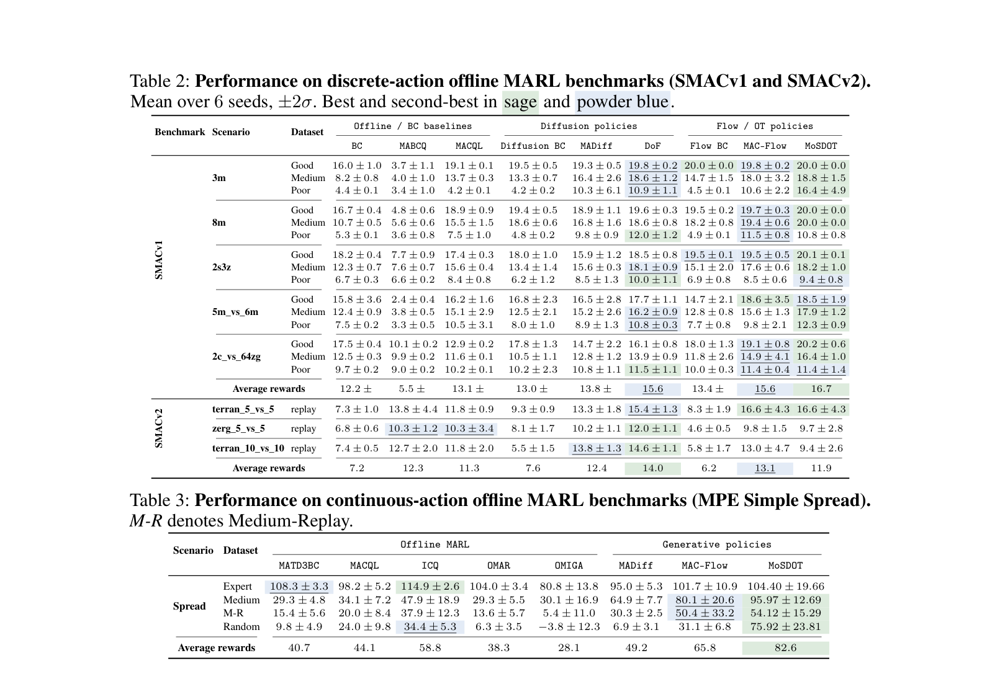
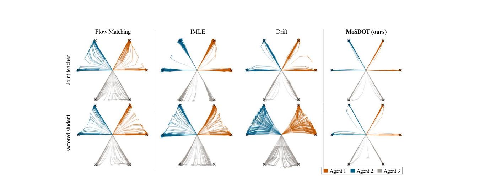
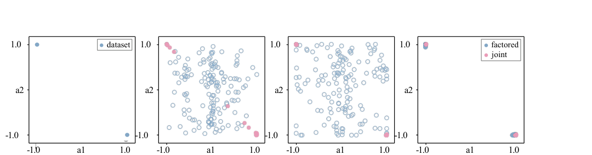
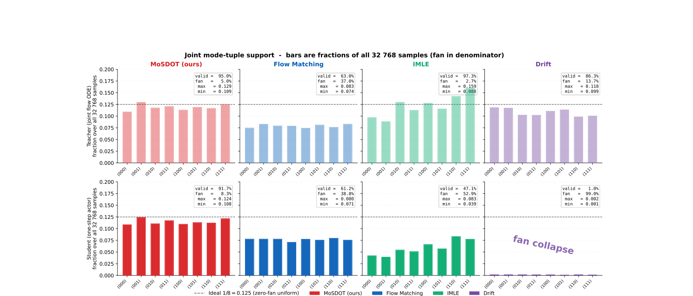
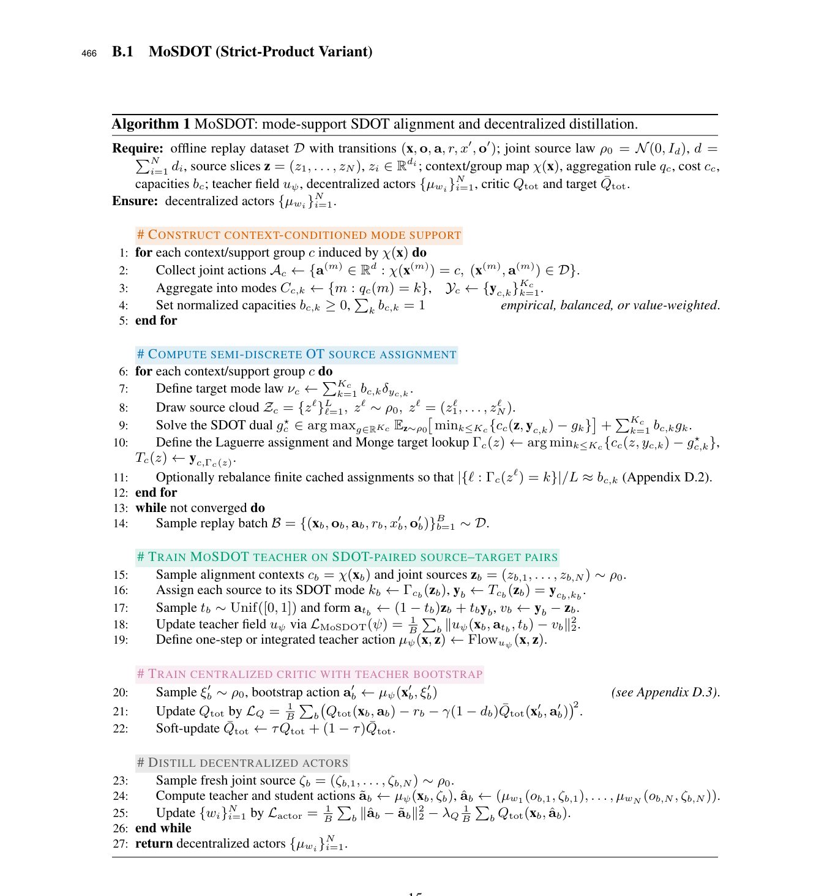

Build mode support
Cluster replay joint actions into representative coordinated modes yk(x).
Offline MARL · Generative Distillation · Semi-Discrete OT
A mode-support semi-discrete optimal transport framework that assigns source noise to coordinated joint-action modes before teacher training, reducing off-support fan mass and improving decentralized one-step actors under CTDE.

Overview
Offline multi-agent reinforcement learning often distills a centralized generative teacher into decentralized one-step actors. The teacher can hit valid joint-action modes while still learning noisy source-to-target assignments that pass through invalid low-density regions.
MoSDOT makes the teacher construction explicit: summarize replay into finite coordinated modes, prescribe each mode's capacity, solve conditional semi-discrete optimal transport, then train and distill on support-preserving paths.
Method
MoSDOT inserts a structured source-to-mode alignment step before teacher training, preserving multimodal replay geometry while keeping decentralized execution unchanged.

Cluster replay joint actions into representative coordinated modes yk(x).
Assign each mode target source mass bk(x), typically from replay frequency.
Partition source space into Laguerre cells Gammax-1(k).
Fit the centralized teacher on aligned paths, then distill into local one-step actors.
Results
The biggest gains appear when the offline dataset contains diverse coordinated behaviors, where unstructured flow teachers are most likely to learn off-support bridges.

| Evaluation | MoSDOT | Reference | Takeaway |
|---|---|---|---|
| Landmark teacher route consistency | 0.972 | Flow matching 0.856 | Cleaner source-to-mode routing |
| Landmark student fan-free | 0.971 | Flow matching 0.849 | Teacher geometry survives distillation |
| SMACv1 average reward | 16.7 | MAC-Flow 15.6 · DoF 15.6 | Strong discrete-action average |
| SMACv2 average reward | 11.9 | DoF 14.0 · MAC-Flow 13.1 | Competitive but not best on all regimes |
| MPE Simple Spread average | 82.6 | MAC-Flow 65.8 · ICQ 58.8 | Clear gains on diverse continuous replay |
Diagnostics
Controlled diagnostics isolate three effects: teacher routing artifacts, projection errors from decentralized distillation, and the residual strict-product gap.




Citation
Replace the author, venue, and archive fields after the public version is available.
@misc{anonymous2026mosdot,
title = {Multi-Agent Coordination via Support-Preserving Distillation},
author = {Anonymous Author(s)},
year = {2026},
note = {Submitted to NeurIPS 2026}
}